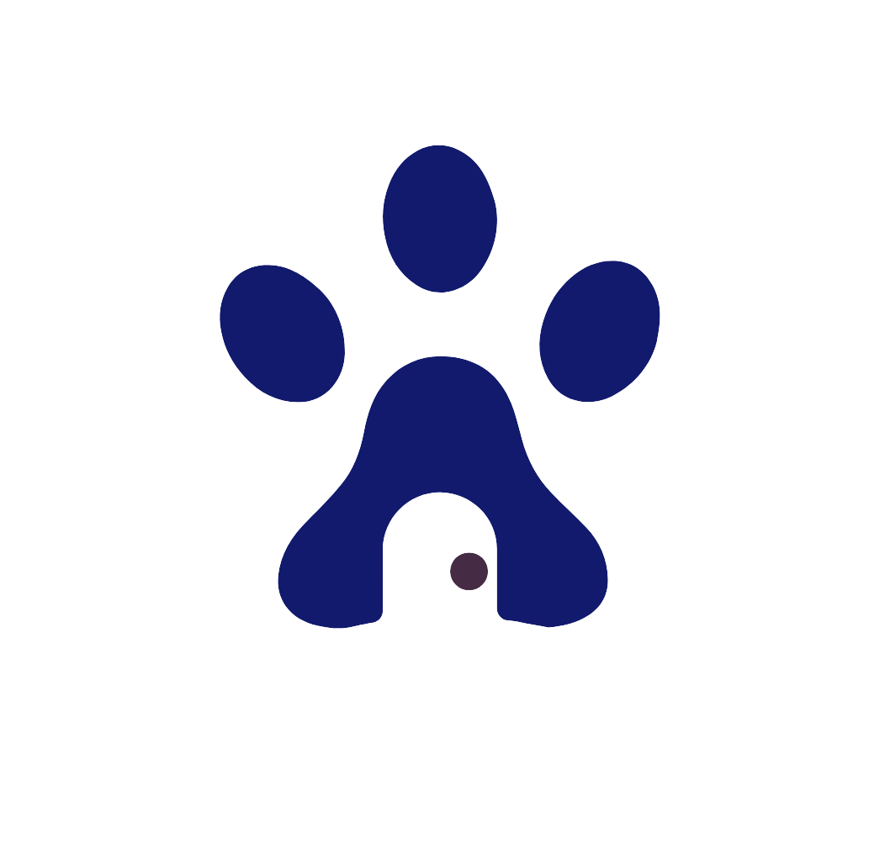

Explore os animais
Navegue pelos perfis e filtre por espécie para encontrar animais disponíveis para adoção.

AuDoçãoConheça os animais disponíveis, escolha aquele que combina com você e fale diretamente com a ONG responsável.
Navegue pelos perfis e filtre por espécie para encontrar animais disponíveis para adoção.
Veja idade, porte, localização, cuidados de saúde e outras informações importantes.
Ao encontrar o animal ideal, clique no botão Quero adotar.
Você será direcionado ao WhatsApp da organização responsável para conversar sobre a adoção.
Cada ONG possui seu próprio processo de avaliação. Ela pode solicitar informações, realizar uma entrevista ou combinar uma visita antes de concluir a adoção.